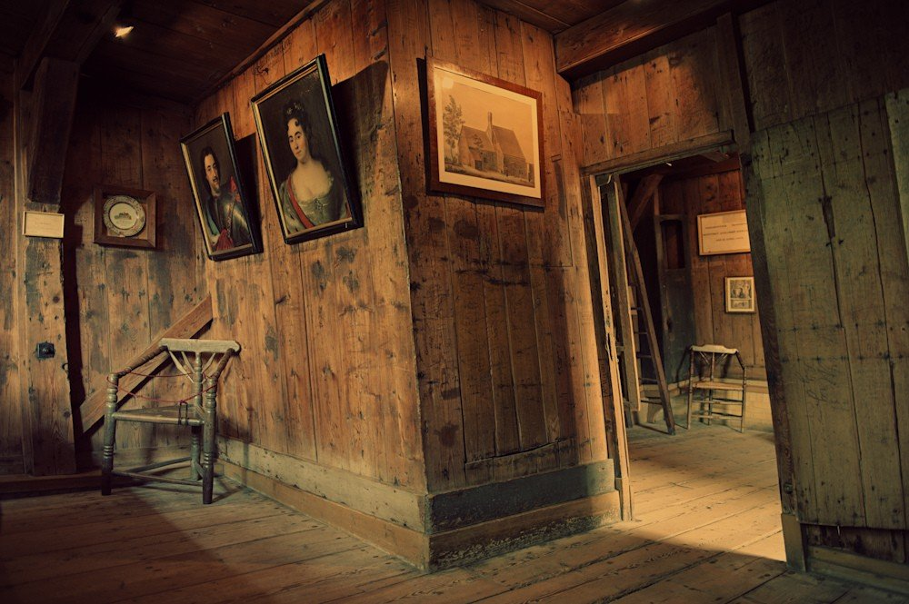

Описание
В Сардамском домике Петра I: «Над бедной хижиною сей витают Ангелы святые: Великий князь благоговей! Здесь колыбель империи твоей, здесь родилась Великая Россия!» Жуковский В.А. (весна 1839 года)
